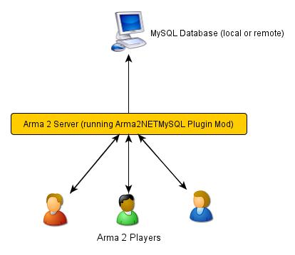

Links:
This program acts as an intermediary between Arma2/Arma3 and a MySQL or SQLite database. It uses the Arma2NET wrapper system. It is written in C#. The program has to be run on the same system as your Arma2/Arma3 server, however, the MySQL database can be either local or remote. The SQLite database runs on the local machine. Please read this entire document as it has many important details regarding the installation and setup.
History:
This program has had a long history. Initially, the program used JayArma2Lib because DLL injections were the only way to pass information between Arma2 and the outside. Eventually, BIS added callExtension which allowed for a more structured (non-hacky) way to pass information. JayArma2Lib switched to this and things continued. Development was done here and an example mission was here. Technically, all that code should still work but the bad part was all the formatting and ugly stuff that had to be done in game via the SQF scripting in order to get the data into a reasonable format. It involved iterating through strings and creating arrays and generally was still pretty hacky. Then, Arma2NET came along and things got better. This wrapper system allowed us to return nice results back to Arma2 and not have to deal with all the formatting nonsense. I ended up just copying the bits and pieces that were needed from the past project and creating a new application. Development is all done via the Github pages. In addition, the Persistent Database Scripts system as created by [KH]JMan currently uses builds of this program for saving data. In addition, MSO, a modular mission framework uses it for saving information.
Arma2NETMySQL looks two places for the relevant files and folders. First, it checks the Arma2/Arma3 root directory. If it can't find them there, it looks in the AppData folder. I would recommend using the AppData location if possible. This makes future upgrades and changes easier to manage. However, some people on limited rental servers may need to put them in the root Arma2/Arma3 folder. Make sure the file/folder structure matches one of these. Don't put some files in one location and some in the other, that could result in problems.
This is just an example location for Arma 2, you'll have to figure out where your Arma game folder is.
E:\Program Files\Steam\steamapps\common\arma 2 operation arrowhead\
E:\Program Files\Steam\steamapps\common\arma 2 operation arrowhead\Databases.txt
E:\Program Files\Steam\steamapps\common\arma 2 operation arrowhead\sqlite\
E:\Program Files\Steam\steamapps\common\arma 2 operation arrowhead\logs\
C:\Users\Yourname\AppData\Local\Arma2NETMySQL\
C:\Users\Yourname\AppData\Local\Arma2NETMySQL\Databases.txt
C:\Users\Yourname\AppData\Local\Arma2NETMySQL\sqlite\
C:\Users\Yourname\AppData\Local\Arma2NETMySQL\logs\
This location is for Windows 7/Vista, if you're running an older version, this location will probably be different.
The folder structure for Arma2NET should look like the following. Note that if you downloaded a compiled version of the plugin, this should already be included and already setup correctly.
This is just an example location for Arma 2, you'll have to figure out where your Arma game folder is.
E:\Program Files\Steam\steamapps\common\arma 2 operation arrowhead\@Arma2NET\
E:\Program Files\Steam\steamapps\common\arma 2 operation arrowhead\@Arma2NET\Addins\
E:\Program Files\Steam\steamapps\common\arma 2 operation arrowhead\@Arma2NET\AddIns\Arma2NETMySQLPlugin\
E:\Program Files\Steam\steamapps\common\arma 2 operation arrowhead\@Arma2NET\AddIns\Arma2NETMySQLPlugin\Arma2NETMySQLPlugin.dll
E:\Program Files\Steam\steamapps\common\arma 2 operation arrowhead\@Arma2NET\AddIns\Arma2NETMySQLPlugin\MySql.Data.dll
E:\Program Files\Steam\steamapps\common\arma 2 operation arrowhead\@Arma2NET\AddIns\Arma2NETMySQLPlugin\System.Data.SQLite.dll
_strCreate = format ["[u=%1,n=%2,a=%3,b=%4,c=%5,d=%6,e=%7]", _allWeapons select 0, _loadoutName, _allWeapons select 1, _allWeapons select 2, _allWeapons select 3, _allWeapons select 4, _allWeapons select 5];
_create = "Arma2Net.Unmanaged" callExtension format ["Arma2NETMySQL ['weapons', 'CreateNewLoadOut', '%1']", _strCreate];In this example, "weapons" is the database name. "CreateNewLoadOut" is the MySQL stored procedure. And all the parameters as part of the procedure are formatted appropriately and then passed along as the third argument.
SELECT * FROM table WHERE name = 'user'
Option One: Arma2NETMySQLCommand:
Your SQF code will look something like this:
_selectTest = "Arma2Net.Unmanaged" callExtension "Arma2NETMySQLCommand ['weapons', 'SELECT * FROM users LIMIT 3']";
In this example, "weapons" is the database name. The next portion is the entire MySQL command which you will need to create manually. This will block until the database call is complete and the result is returned.
Option Two: Arma2NETMySQLCommandAsync
Your SQF will look something like this:
_selectTest = nil;
while {isNil("_selectTest")} do {
_selectTest = "Arma2Net.Unmanaged" callExtension "Arma2NETMySQLCommandAsync ['weapons', 'SELECT * FROM users LIMIT 3']";
if (_selectTest == "") then {
_selectTest = nil;
};
sleep 0.5; //sleep for a half-second so we don't thrash the server with callExtension calls
};
In this example, "weapons" is the database name. The next portion is the entire MySQL command which you will need to create manually. You will then need to loop until the result is returned.
.sqlite
C:\Users\Yourname\AppData\Local\Arma2NETMySQL\sqlite\weapons.sqlite
SELECT * FROM table WHERE name = 'user'
Option One: Arma2NETMySQLCommand:
Your SQF code will look something like this:
_selectTest = "Arma2Net.Unmanaged" callExtension "Arma2NETMySQLCommand ['weapons', 'SELECT * FROM users LIMIT 3']";
In this example, "weapons" is the database name. The next portion is the entire MySQL command which you will need to create manually. This will block until the database call is complete and the result is returned.
Option Two: Arma2NETMySQLCommandAsync
Your SQF will look something like this:
_selectTest = nil;
while {isNil("_selectTest")} do {
_selectTest = "Arma2Net.Unmanaged" callExtension "Arma2NETMySQLCommandAsync ['weapons', 'SELECT * FROM users LIMIT 3']";
if (_selectTest == "") then {
_selectTest = nil;
};
sleep 0.5; //sleep for a half-second so we don't thrash the server with callExtension calls
};
In this example, "weapons" is the database name. The next portion is the entire MySQL command which you will need to create manually. You will then need to loop until the result is returned.
-mod=expansion\beta;expansion\beta\expansion;@Arma2NET
This plugin doesn't require any other third party mods like ACE or CBA. But, they do have some nice utility functions and features that may be helpful when you make your missions.
Arma2/Arma3 player clients do not need to do any of this. They will interact with the Arma2/Arma3 server and through SQF scripting, so you can pass the information from the database back to them or use it however you need.
Arma2NETMySQL Plugin uses the callExtension function, however, there are some technical considerations as part of this.
Returning results in Arma 2 beta 97299 or greater has a limit of 16383 (~16 KB) characters. If you try to run a query that will return a result longer than 16383 characters, it will return the string "TooLong". Then you know you will need to limit the number of results that are returned. In MySQL, you can use the limit parameter, or in SQLite, the limit parameter. This is a limitation of Arma2 so don't ask for this to be fixed.
The length limit for Arma 3 appears to be similar, however, this may change in the future.
Currently, commas cannot be used as data to be sent back and forth because the system uses commas to identify splitting up the database columns. If you have a suggestion for how to solve this or would like to submit a fix, I would certainly appreciate it.
The callExtension method will block on the server until a result is returned. Some people were reporting problems when running this plugin on servers with lots of players and running many database calls. This was lagging the server and causing players issues. If you are doing this and using Arma2NETMySQLCommand and need super high performance, consider switching over to the asynchronous method of using Arma2NETMySQLCommandAsync.
Windows 7 (and other Windows versions?) can sometimes block DLLs from running. If you right click the .dll and click on properties at the bottom of the list there is a security tab. For the precompiled DLL, it knows the DLL came from another computer and thus doesn't trust it. You'll need to enable the DLL to run. If you are not comfortable with this, you can always compile the source code and generate the DLL yourself.
For the dependency DLL files of MySQL and SQLite, if you are having trouble and it is giving you an error about System.IO.FileNotFoundException there is a possible solution. You can try putting the DLL dependencies for these two in @Arma2NET/DLLhere.dll. Just copy the DLL files from the installed location to this root @Arma2NET folder. You will need to relaunch the game.
If you are getting a returned result of "Error" in the game, this means there's something wrong with your query. Check the logs to track down the problem.
Stuck? First check the "logs" folder. The plugin creates a new log file each time it's run. Go into your appdata folder or the root Arma game folder and then find the "logs" folder. If there are errors or things, they will show up there.
C:\Users\Yourname\AppData\Local\Arma2NETMySQL\logs\If you don't have a logs folder or it's empty, this is a sign the plugin isn't running. Try the second step:
Arma2NET also stores log files which are located here:
C:\Users\Yourname\AppData\Local\Arma2NET\This will tell you if the plugin is loading appropriately. If it's not, check your launcher and make sure that is all correct.
You can also check the RPT files generated by Arma 2/Arma 3. These are located here:
C:\Users\Yourname\AppData\Local\{ArmA 2 OA\Arma 3}
These can get very long so scroll all the way to the bottom to see the latest run. This will tell you if you have an error in
your SQF scripting code or other such problems. Note, these path locations are for Windows 7 (and Vista?) and may be different
for other versions of Windows.
If you're still having problems, please go back and double check that you did everything correctly. If you skipped a step or got an error and just decided to continue to the next step, nothing will work.
If you found a bug, please create an issue ticket here: Github page.
There is also a thread on the BIS forums so if you're stuck, you can ask there. The forums are preferred over emailing me because then the question/answer is available to future people who have similar problems. If you post any questions anywhere, please post ALL log files, otherwise we will have problems helping you.
To examine the sourcecode, open up the provided Visual Studio project. To compile the code into a .DLL check to make sure the references are pointing to the correct place. MySql.Data needs to be listed in the references and should point to "MySql.Data.dll" which is provided by the MySQL Connector listed above. System.Data.SQLite should point to "System.Data.SQLite.dll" which is provided by the SQLite precompiled binaries listed above. Once these are set, you can compile the sourcecode. The resulting .DLL should be placed in the Arma2NET Addins folder here: @Arma2NET\AddIns\Arma2NETMySQLPlugin. Each plugin is stored in a folder with the name of the DLL. Any dependency DLLs can also be placed in this folder as well.
For easy testing, you can use Arma2NetExplorer.exe provided by Arma2NET. After launching this program, click "list addins" to see if Arma2NETMySQL loaded in correctly. Then you can run straight commands as outlined in the above documentation. For example:
Arma2NETMySQLCommand ['weapons', 'SELECT * FROM users LIMIT 3']
If the Databases.txt file and your database is setup correctly, you can run straight commands here and see the result. This is extremely helpful for testing without having to load up the entire game. Make sure if you make a change to the C# code that you recompile and copy over the .DLL to the appropriate folder, otherwise you'll be running the old version and won't see any changes.
Arma2NETMySQL is licensed under the GPL version 3. If you would like to contribute code or fixes, please fork the project on Github and submit a pull request.